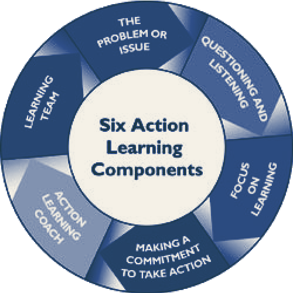

A doctoral-level organization and leadership teaching scholar researching how workplace experiences, learning processes, and organizational contexts shape employee development and leadership effectiveness.
She values learning and continuous improvement, self-initiative, collaboration, people- and experience-based learning, and feedback-informed teaching.
Based in New York, NY. Open to conversations about the following positions; other related opportunities are also welcome: instructional design, training consultant, leadership development, assistant professor, research collaboration, and speaking invitations.
Behind what, in the moment, feels like our darkest hours.
To find the light
One must first confront,
Then dissect,
And ultimately awaken.
The studies below tell the stories of individuals, programs, and organizations that,
Once caught in the storm,
Navigated through inquiry,
Found resonance,
And, in their own ways, reconstituted.
Action Learning
Action Learning is a hands-on approach born in the UK where you tackle complex programs, learn with your peers by taking action and reflecting on the results. An Action Learning Facilitator creates conditions for learning for individuals, teams, and organizations so they can work through complex problems, reflect on actions, build leadership capacity, and strengthen team collaboration. The three stories in this section describe people's leadership development journey through action learning and the evolution of action learning programs.

2026
Learning to Create Learning: Career Development of Action Learning CoachesDissertation
Li, Y. (2026). Unpublished Doctoral Dissertation, Teachers College of Columbia University. ProQuest Dissertations & Theses Global.
My dissertation looks at how people become action learning coaches — the facilitators who guide teams through Reginald Revans' problem-solving method — and how their own skills and identity develop over the course of that career path.
Cultivating Managers with Knowledge and Action through Action Learning: The Practice Comparison of MIT Sloan School of Management and ECUST School of Business
Chen, W., Ali, A., Huang, Y., Hou, L., Zhang, S., & Li, Y. (2026). Action Learning Research and Practice, 1–16.
A comparison of how two very different business schools — MIT Sloan (20+ years of action learning) and ECUST School of Business in Shanghai (10+ years) — run their programs, looking at training goals, project design, and school–enterprise partnerships. The paper argues for tighter integration between what managers learn in theory and how they act on it in practice.
Methodology
Comparative case analysis of the action learning programs at MIT Sloan School of Management and the ECUST School of Business, examining program design across training goals, project structure, and school–enterprise partnerships.
Key Findings
Despite differing institutional histories and program maturity, both schools show that a stronger connection between management theory and how managers act on it in practice is central to program effectiveness.
A Review of Action Learning Practices in China and Its Cultural Adaptations
Li, Y., & O'Neil, J. A. (2025). Action Learning Research and Practice, 1–18.
Action learning has been a go-to leadership development method in Chinese organizations for two decades, but no one had pulled together how it's actually being adapted there. We analyzed 13 action learning programs across 12 published articles and, using Hofstede's and Marquardt's cultural frameworks, found consistent patterns in how Chinese organizations reshape the method to fit local norms.
Methodology
A structured review of 13 action learning programs drawn from 12 published articles, analyzed through Hofstede's and Marquardt's cultural frameworks.
Key Findings
Chinese organizations consistently reshape action learning in similar ways to fit local cultural norms, suggesting identifiable patterns in how a Western-origin method gets culturally adapted.
Placeholder: add a short storyline about this population here.
2026
Methodological and Ethical Decision-Making in Researching Professional Learning with Online Communities
Li, B., & Li, Y. (2026). New Horizons in Adult Education and Human Resource Development.
HRD research inside online communities is often waved through as "non-human subject" research, but it still raises real questions about consent, anonymity, and vulnerability. Drawing on our own fieldwork inside a Chinese online community (Douban), we lay out three things researchers need to think through: how people give informed consent to being studied, how to protect anonymous users who may still be identifiable, and how to responsibly interpret learning that happens in these semi-public digital spaces.
Methodology
Draws on the authors' own qualitative fieldwork within a Chinese online community (Douban), examining how HRD researchers can ethically study professional learning taking place in that space.
Key Findings
Identifies three areas requiring deliberate ethical decision-making: how informed consent is obtained from community members, how to protect users who remain identifiable despite anonymization, and how to responsibly interpret learning discourse occurring in semi-public digital spaces.
Exploring Career Transition Narratives in a Chinese Online Community through Transformative Learning
Li, B., & Li, Y. (2025). Journal of Transformative Education.
Career transitions into China's IT industry are famously unpredictable. We analyzed discussion threads from a peer-led Chinese online community built around IT career-transition failures, to see how members made sense of their setbacks. The stories showed people working through emotional complexity, reframing failure, and engaging in real critical reflection as they moved forward.
Methodology
Qualitative analysis of discussion threads from a peer-led Chinese online community centered on IT career-transition failures.
Key Findings
Members' narratives revealed how they worked through emotional complexity, actively reframed failure, and engaged in genuine critical reflection as they moved toward new career paths.
Placeholder: add a short storyline about this population here.
2025
Transformative Learning in Isolation: A Phenomenological Study of Chinese Adults Navigating Uncertainty
Li, Y., Guo, C., & Chen, R. (2025). Journal of Transformative Education.
A phenomenological study exploring how Chinese adults made sense of a prolonged period of isolation and uncertainty, and what that experience meant for their own transformative learning.
Failing, Learning, and Moving On: A Systematic Review of Early-Career SetbacksIn Preparation
Li, Y., & Li, B. (2026). Manuscript in preparation. Career Development International.
A systematic review pulling together existing research on early-career setbacks — job loss, failed transitions, stalled starts — to map what's already known about how young professionals recover and grow from them.
Manuscript in preparation
Career DevelopmentSystematic Review
2026
Transformative Learning through Social Media: In Search of Collective Communities and Diverse Perspectives on Contemporary Workplace Issues of Power and InequalityPlanned
Li, Y., & Li, B. (2026).
Placeholder: add the abstract for this project here.
Planned for future research
Online CommunitiesTransformative LearningPower and Inequality
No upcoming articles match that filter.
01b
Future Research
Research Direction Title Placeholder
Placeholder: add a short description of this future research direction.
Research Direction Title Placeholder
Placeholder: add a short description of this future research direction.
01c
Peer Review
Sept 2021 — Present
Peer Reviewer
Academic Service
Reviewed manuscripts for journals including Action Learning: Research and Practice, Human Resources Development International, and AHRD conferences.
Actively participated in HRD-related conferences to present research and build connections with researchers and practitioners.
02
Leadership Training and Instructional Design
As Instructional Assistant at Teachers College, Columbia University (Sept 2023 – May 2026), collaborated with faculty on course design following the ADDIE model, classroom management, and Canvas administration across the following courses.
Action Learning
Add a short description of what this course covers.
Incorporated video, readings, and individual and group activities to support diverse learning styles; coached students through group activities and role plays to build new skills and competencies.
CanvasCoachingAction Learning
How Adults Learn
Add a short description of what this course covers.
Supported course preparation and online platform management to deliver seamless, effective instruction; captured learner feedback to continuously improve course content and experience.
CanvasCurriculum Design
Leadership and Management Practices
Add a short description of what this course covers.
Coached a group of 30–40 students online and in person, and served as liaison between faculty and students to ensure timely communication and issue resolution.
CoachingLeadership
No courses match that filter.
Teaching Philosophy
Add your teaching philosophy here — how you approach students, design learning experiences, and what you hope learners take away from your courses.
03
Experience
Sept 2021 — May 2026
Doctoral Researcher
Teachers College, Columbia University — New York, NY
Led and managed multiple multi-year research projects through independent work and collaboration with colleagues to ensure high-quality writing.
Built connections with SMEs, conducted interviews, and facilitated discussions to identify learning needs, capability gaps, and adoption barriers.
Analyzed and coded interviews and focus groups using Dedoose and Excel to identify qualitative and quantitative trends.
Drew conclusions from complex qualitative findings into actionable recommendations, producing executive-ready reports and presentations.
Sept 2023 — May 2026
Instructional Assistant
Teachers College, Columbia University — New York, NY
Collaborated with faculty on teaching design and classroom/online platform management across Action Learning, How Adults Learn, and Leadership and Management Practices. See the Leadership Training and Instructional Design section for details.
Sept 2021 — Dec 2021
Talent Management Associate
Retensa Employee Retention — New York, NY
Conducted structured, over-the-phone interviews with 500 employees to understand experience and identify retention risks and organizational trends.
Analyzed and coded interviews to surface emerging trends; translated employee feedback into practical strategies for leadership and HR stakeholders.
May 2020 — Aug 2020
Program Coordinator, Learning Experience & Recruitment
Atlanta Country Day School — Atlanta, GA
Led talent acquisition initiatives, including resume screening and interviewing; successfully hired 2 math teachers within a month.
Facilitated virtual information sessions for prospective families and designed instructional and marketing materials for consistent messaging.
04
Education
September 2026
Doctor of Education in Adult Learning and Leadership
Teachers College, Columbia University — New York, NY
December 2019
Master of Education in Learning, Leading, and Organization Development